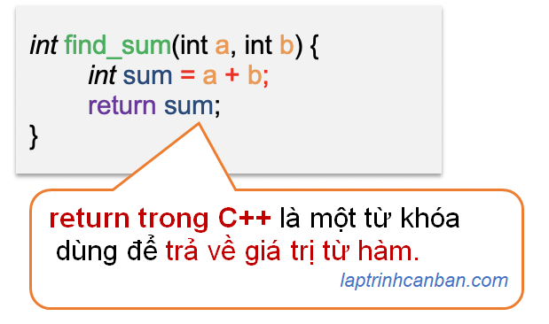

Hướng dẫn cách dùng return trong C++. Bạn sẽ học được cách dùng return để trả về giá trị trong hàm C++, cách xử lý câu lệnh return trong hàm trả về nhiều giá trị trong C++, cũng như cách sử dụng return để kết thúc hàm trong C++ sau bài học này.
Return trong C++ là gì
Return trong C++ là một từ khóa (keyword) dùng để trả về giá trị từ hàm. Return có tác dụng kết thúc hàm và trả lại điều khiển cũng như kết quả xử lý hàm cho người gọi. Chúng ta có thể sử dụng hoặc lược bỏ return khi khai báo hàm trong C++, và một hàm có chứa return trong C++ được gọi là hàm trả về giá trị trong C++.

Cách dùng return trong C++
Tùy thuộc vào việc hàm có trả về giá trị hay không mà chúng ta có những cách sử dụng return trong C++ khác nhau.
return trong hàm trả về giá trị
Khi sử dụng return trong hàm trả về giá trị trong C++, chúng ta viết giá trị trả về của hàm đằng sau lệnh return như sau:
kiểu trả về tên hàm (kiểu 1 tham số 1, kiểu 2 tham số 2, ...){
Câu lệnh;
Câu lệnh;
return giá trị trả về;
}
Ví dụ:
|
return trong hàm không trả về giá trị
Trong hàm không trả về giá trị trong C++, chúng ta lược bỏ lệnh return, và chỉ định kiểu dữ liệu trả về thành kiểu void như sau:
void tên hàm (kiểu 1 tham số 1, kiểu 2 tham số 2, ...){
Câu lệnh;
Câu lệnh;
}
Ví dụ cụ thể:
|
return trả về kết quả biểu thức
Ở phần trên chúng ta đã biết cách dùng return để trả về một giá trị cụ thể rồi. Tuy nhiên ngoài cách trả về một giá trị cụ thể như một số, một ký tự v.v.. như vậy thì chúng ta cũng có thể sử dụng return để trả về kết quả của một biểu thức tính toán.
Ví dụ, chúng ta có thể trả về kết quả phép cộng bằng cách viết trực tiếp biểu thức tính toán sau lệnh return như sau:
|
Hoặc là chúng ta có thể trả về các giá trị true, false bằng cách viết trực tiếp phép so sánh sau lệnh return như sau:
|
Cách viết biểu thức trên được gọi là toán tử 3 ngôi trong C++, là một loại toán tử giúp rút gọn các lệnh điều kiện, giúp code C++ gọn gàng và tiết kiệm công sức viết hơn.
Hàm trả về nhiều giá trị trong C++
Trong C++, một hàm mà có nhiều giá trị được trả về thì được gọi là hàm trả về nhiều giá trị trong C++.
Khác với các ngôn ngữ lập trình khác, thì một điều rất đáng tiếc là trong ngôn ngữ C++, chúng ta không thể trả về trực tiếp nhiều giá trị trong hàm bằng lệnh return được. Để trả về nhiều giá trị trong C++, chúng ta cần phải trả về các giá trị này một cách gián tiếp thông qua mảng, hoặc là con trỏ mà thôi.
Ví dụ như cách sử dụng con trỏ để trả về nhiều giá trị. Trong bài Con trỏ trong C++ là gì chúng ta đã biết, con trỏ trong C++ là một biến được dùng để lưu trữ địa chỉ của dữ liệu trong bộ nhớ máy tính. Nói cách khác thì con trỏ sẽ cho chúng ta biết một biến hiện đang nằm ở đâu trong bộ nhớ mày tính, và nếu giá trị con trỏ thay đổi, thì đồng nghĩa với việc giá trị mà nó đang đại diện cũng sẽ thay đổi.
Bằng cách sử dụng các con trỏ làm đối số trong hàm C++, chúng ta có thể thực hiện các thao tác với giá trị của biến mà chúng đại diện trong hàm. Qua đó, thay vì tính toán rồi trả về trực tiếp nhiều giá trị, thì chúng ta có thể gián tiếp thay đổi các giá trị đó, thông qua việc xử lý con trỏ đại diện của chúng.
Ví dụ, hàm dưới đây giúp chúng ta hoán đổi giá trị giữa hai biến. Chúng ta không truyền giá trị, thay đổi giá trị trong hàm rồi trả về các giá trị, mà thay vào đó, chúng ta truyền con trỏ đại diện cho giá trị vào hàm, thay đổi con trỏ trong hàm và qua đó thay đổi các giá trị mà các con trỏ đại diện ngoài hàm.
|
Kết quả:
Truoc khi hoan doi：num1 = 123, num2 = 456 |
Giống như thế, bằng cách sử dụng con trỏ, chúng ta có thể gián tiếp trả về nhiều giá trị từ hàm trong C++.
Bạn có thể tìm hiểu thêm về con trỏ trong C++ tại các bài viết sau đây:
- Xem thêm: Con trỏ trong C++ là gì
- Xem thêm: Con trỏ của con trỏ trong C++
- Xem thêm: Con trỏ mảng 2 chiều trong C++
Sử dụng return để kết thúc hàm
Ngoài việc trả về giá trị, câu lệnh return cũng được sử dụng để kết thúc quá trình xử lý của hàm. Bằng cách sử dụng return, bạn có thể kết thúc một hàm tại một thời điểm nào đó khi đã thoả mãn một điều kiện ban đầu.
Ví dụ, chúng ta có thể kết thúc một hàm tuỳ thuộc vào giá trị nhập vào hàm đó như sau:
|
Kết quả:
num = 3 Gia tri trong pham vi tu 1 den 10 |
Bạn có thể thấy tuỳ thuộc vào giá trị truyền hàm vào, mà hàm có thể được kết thúc tại theo các điều kiện khác nhau, bằng cách sử dụng câu lệnh return như trên.
return 0 và return 1 trong hàm main()
return 0 và return 1 là hai giá trị trả về duy nhất của hàm main() trong C++.
Hai giá trị trả về này của hàm main() có ý nghĩa như sau:
Chúng ta chỉ đinh
return 0để kết thúc chương trình theo cách bình thường (normal termination). Điều đó có nghĩa là kể cả chương trình có xảy ra lỗi hay không, thì C++ vẫn ngầm định là chương trình đã được kết thúc mà không có lỗi xảy ra.Chúng ta chỉ đinh
return 1để kết thúc chương trình theo cách bất thường (abnormal termination). Điều đó có nghĩa là khi chương trình xảy ra lỗi, thì lỗi này sẽ được trả về khi kết thúc chương trình.
Bạn có thể tìm hiểu thêm về chúng trong bài viết dưới đây:
- Xem thêm: Hàm main trong C++
Tổng kết
Trên đây Kiyoshi đã hướng dẫn bạn về cách dùng return trong C++ rồi. Để nắm rõ nội dung bài học hơn, bạn hãy thực hành viết lại các ví dụ của ngày hôm nay nhé.
Và hãy cùng tìm hiểu những kiến thức sâu hơn về C++ trong các bài học tiếp theo.
HOME>> lập trình c++ cơ bản dành cho người mới học lập trình>>11. hàm trong c++